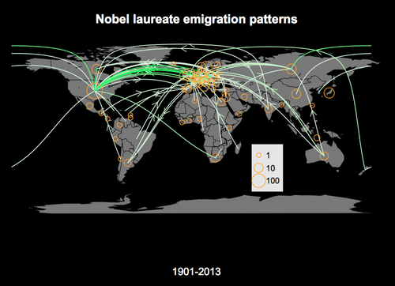
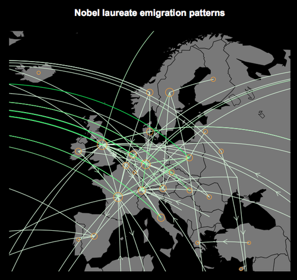

Global Movement of the Nobel Laureates
Posted on 18 Sep 2016 in Data science
I played a lot of quiz bowl as a undergrad in college, and one of the ways our team practiced was in memorizing specific lists of knowledge that we knew came up often in competition (yay data). One area that was always useful across the board was the Nobel Prizes, and I spent a lot of time learning about the history of science and medicine, the various laudatory efforts in the name of peace, and reading books by authors I'd have probably never otherwise approached (literary criticism of the Nobel laureates to follow in some separate forum).
So what do the Nobel Prizes have to do with data science? The Nobel foundation has an API, which can be used to download all the data they've collected on everyone who's received a Nobel Prize. The database includes basic information like date and place of birth and death, details on which prize they won, and the subjects of their work. It's an interesting dataset to try and work with.
My first pass at working with this data centered on geography. Policy related to funding of basic science is an important issue to me, and there's an increasing discussion about the exchange of talent (think "brain drain") taking place between Europe, Asia, and the rest of the world. Using the Nobel data, I thought it'd be interesting to explore where the world's most prominent scientists, authors, and peacemakers ended up over the course of their lifetimes.
Methods: I used a Python wrapper to query the Nobel API and format the data for my queries, and then made the maps below in R following examples from Flowing Data. All of my code is available on Github here.
Results: I made two maps showing the lifetime emigration of Nobel laureates. Lines between (present-day) countries indicate the number of Nobel laureates who were born in the first country and died in the second. Arrows follow the direction of emigration; lines of darker green indicate more people shared the same birth/death countries. If the countries of birth and death were the same for a laureate, or if no death location is given in the database (presumably someone who is still alive), the country is marked with an orange circle. The size of the circle is proportional to the total number of living + homebody laureates from that country.

So what does this show? Historically, Nobel Prizes were predominantly awarded to (and by) northern and western Europeans, with a big shift to laureates from the U.S. (and China and Japan, to a lesser extent) only in the last fifty years. This map confirms that. For paths, the most common trans-continental tracks are between the US and various European countries. The most common link is from the UK->US; eight scientists born in Great Britain emigrated to the US and later died there.
For the tracks in the less-represented parts of the world (Latin America, Africa, Oceania, the Middle East, and South Asia), the majority are for net emigration. This was often the result of European-ancestry children born abroad and then moving back for their education and later careers (eg, Peter Medawar, Walter Brattain, Claude Simon), especially for the early parts of the 20th century when much of the world still had extant or recent colonial ties.
More recently, laureates are staying in their native countries and many fewer are emigrating from the US or Europe. Some of the exceptions to this are tragedies — for example, the unusual link from Sweden to Zambia shows where Nobel Peace Prize laureate Dag Hammarskjöld died in a plane crash in 1961.
I made a version of the same map zoomed in on Europe, which is quite a bit more complicated. There's an excess of paths and nodes connected to Switzerland, partly due to its hosting of several international organizations and partly due to net emigration after World War II, I'd guess. France, Germany, and the UK are the most well-represented countries in this group, and all have significant emigration links to the US.

There's quite a lot in this data that demands a more careful analysis:
- There's the big issue of time; 113 years of data are collapsed into one map, and patterns would look very different for today vs. the early 20th century.
- There's also the effect of survivor bias, and the fact I'm combining possible emigrants with those who stayed just because they haven't died yet.
- Splitting the data by cohort (category of prize) would also be interesting; the Nobel Peace Prize has a much higher proportion of laureates from lower-HDI countries than the science or medicine prizes, for example.
- Maybe the biggest caveat is that these results are only based on location of birth and death — this doesn't tell you where a scientist did his/her work, the cultures that might be the basis for an author's books, or the locations in which recipients have been working to keep the peace. That's a much larger task, and I don't think the contents of the Nobel API alone have enough data to accurately probe that. Some type of natural language processing on content from either the official Nobel biography or sources like Wikipedia would be an interesting next step.